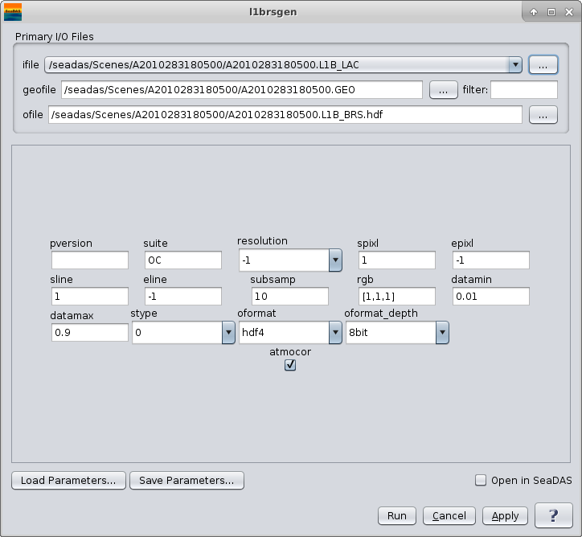

| l1brsgen | |
Creates a Level 1 browse (pseudo true color - RGB) file.
Location
Details
Command Line Usage
Tools -> OCSSW Processing -> l1brsgen
l1brsgen creates small subsetted bitmap samples of the larger datasets. The default SeaWiFS browse product is an 8-bit true color image created from the subsampled and Rayleigh corrected L1A bands. A 24-bit true color image can also be generated.
|  |
| UI Element Name | Type | Description | Required/Optional | Default Value |
| ifile | Text Field | Input Level 1 data product. | Required | |
| geofile | Text Field | input L1 geolocation file name | Conditional - MODIS and VIIRS only | |
| ofile | Text Field | Output image filename. | Required | |
| pversion | Text Field | processing version string | Optional | Unspecified |
| suite | Text Field | product suite string for loading suite-specific defaults | Optional | OC |
| resolution | int | processing resolution (MODIS only)
-1: standard ocean 1km processing
1000: 1km resolution including aggregated 250 and 500m land bands
500: 500m resolution including aggregated 250 land bands and replication for lower resolution bands
250: 250m resolution with replication for lower resolution bands
|
Conditional - Required for processing MODIS products | -1 |
| spixl | int | start pixel number | Optional | 1 |
| epixl | int | end pixel number (-1 = last pixel) | Optional | -1 |
| sline | int | start line number | Optional | 1 |
| eline | int | end line number (-1 = last line) | Optional | -1 |
| subsamp | int | subsampling interval | Optional | 1 |
| rgb | int | bands to use for red, green and blue | Optional | [1,1,1] |
| datamin | float | minimum value for scaling | Optional | 0.01 |
| datamax | float | maximum value for scaling | Optional | 0.9 |
| stype | int | scaling type:
0: log
1: linear
|
Optional | 0 |
| oformat | int | defines output format:
0: hdf4
1: bin
2: png
3: ppm
|
Optional | hdf4 |
| oformat_depth | int | defines color depth:
0: 8 bit
1: 24 bit
|
Optional | 8bit |
| atmocor | boolean | toggle atmospheric correction | Optional | on |
| UI Element Name | Type | Description |
| Browser Button | Button | Selects infile/ofile |
| Load Parameters ... | Button | Reads in previously saved parameters and populates the fields in GUI. |
| Store Parameters ... | Button | Saves the current arguments in GUI in a file. |
| Run | Button | Executes the l1brsgen command with arguments provided in the UI. |
| Cancel | Button | Closes current processor GUI. |
| Apply | Button | Makes current arguments effective. |
| Open in SeaDAS | Checkbox | If selected, the ofile will be added to the open products list right after its generation. |
| ? | Button | Displays the help content of the current command. |
l1brsgen 9.3.0-seadas-v7.5.2.1 (Dec 3 2018 15:37:24)
Usage: l1brsgen argument-list
The argument-list is a set of keyword=value pairs. The arguments can
be specified on the commandline, or put into a parameter file, or the
two methods can be used together, with commandline over-riding.
return value: 0=OK, 1=error, 110=north,south,east,west does not intersect
file data.
The list of valid keywords follows:
help (boolean) (alias=h) (default=false) = print usage information
version (boolean) (default=false) = print the version
information
dump_options (boolean) (default=false) = print
information about each option
dump_options_paramfile (ofile) = print
information about each option to paramfile
dump_options_xmlfile (ofile) = print
information about each option to XML file
par (ifile) = input parameter file
pversion (string) (default=Unspecified) = processing version string
suite (string) (default=OC) = product suite string for loading
suite-specific defaults
ifile (ifile) (alias=ifile1) = input L1 file name
geofile (ifile) = input L1 geolocation file name (MODIS/VIIRS only)
resolution (int) (default=-1) = processing resolution (MODIS only)
-1: standard ocean 1km processing
1000: 1km resolution including aggregated 250 and 500m land bands
500: 500m resolution including aggregated 250 land bands and
replication for lower resolution bands
250: 250m resolution with replication for lower resolution bands
ofile (ofile) (alias=ofile1) (default=output) = output file name
oformat (string) (default=hdf4) = output file format
hdf4: output a HDF4 file
bin: output a flat binary file
png: output a PNG file
ppm: output a netPBM PPM file
oformat_depth (string) (default=8bit) = output file color depth for HDF4 file
8bit: output 8 bit color depth
24bit: output 24 bit color depth
spixl (int) (default=1) = start pixel number
epixl (int) (default=-1) = end pixel number (-1=the last pixel)
sline (int) (default=1) = start line number
eline (int) (default=-1) = end line number (-1=the last line)
subsamp (int) (default=1) = sub-sampling interval
rgb (int) (default=[1,1,1]) = bands to use for red, green and blue
atmocor (boolean) (default=on) = toggle atmospheric correction
datamin (float) (default=0.01) = minimum reflectance for scaling
datamax (float) (default=0.9) = maximum reflectance for scaling
stype (int) (default=0) = scaling type
0: log
1: linear
This program produces a PPM-formatted output image rendered in a Plate Carree
projection.
The default band combination produces a "true-color" image. Other combinations
may be chosen with the "rgb=" option. The expected argument to this option is
a comma separated string of wavelengths that specifies the desired bands in
red-green-blue order. For example, to produce a false color SeaWiFS output
image using 865, 670 and 555 nm as the red, green, and blue values
respectively, the option would be specified as "rgb=865,670,555".
cirrus_opt (boolean) (default=false) = cirrus cloud reflectance correction option
atrem_opt (int) (default=0) = ATREM gaseous transmittance bitmask selector
0: H2O only
1: Ozone
2: CO2
4: NO2
8: CO
16: CH4
32: O2
64: N2O
atrem_full (int) (default=0) = ATREM gaseous transmittance calculation option
0: Calculate transmittance using k-distribution method (fast)
1: Calculate transmittance using full method (slow)
atrem_geom (int) (default=0) = ATREM gaseous transmittance geometry option
0: Only recalculate geometry when error threshold reached (fast)
1: Recalculate geometry every pixel (slow)
atrem_model (int) (default=0) = ATREM gaseous transmittance Atm. model selection
0: Use pixel's latitude and date to determine model
1: tropical
2: mid latitude summer
3: mid latitude winter
4: subarctic summer
5: subarctic winter
6: US standard 1962
atrem_splitpaths (int) (default=0) = ATREM gaseous transmittance split paths between solar and sensor (turns atrem_full on)
0: Calculates transmittance over total path length (default)
1: Calculates transmittance over separate solar and sensor paths (slow)